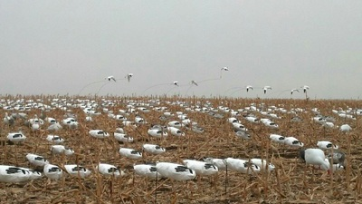
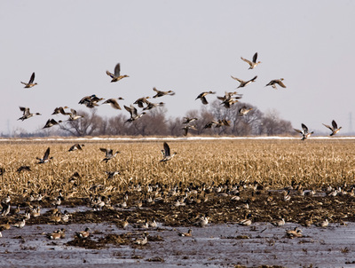
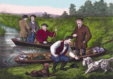
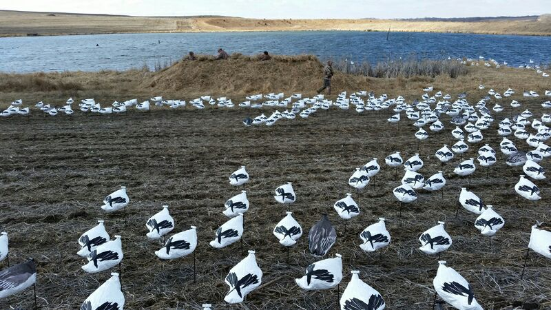
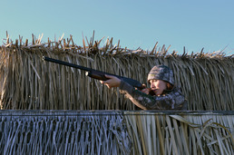
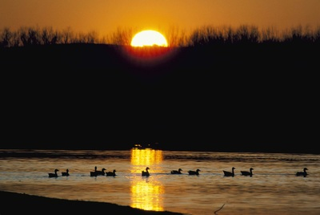

Welcome

Welcome to Ellsworth’s Outsiders Outdoors a family owned top of the line snow goose hunting outfitter. We offer world class hunting with highest quality of equipment. All of our hunts are setup on proven leases that kill birds year after year. Snow geese are considered one of the toughest birds to finish in the sport and our success rate is incredibly high. Want in?.
The Hunt

Unlimited Opportunities for a Memorable Experience.
You will be hunting in south east Nebraska targeting birds migrating from Squaw Creek National Wildlife Refuge in Mound City, Missouri to the Rainwater Basins here in Nebraska. My blinds are comfortable heated above ground blinds built to blend into the background of the cornfields of NE. A typical hunt will be opportunities at birds that have roosted in the area as they go out to feed. At some point in the am when you get hungry your guide will cook a hot breakfast for everyone in the blind. Between 10am and 2pm is when some of the best migration typically happens and then past 2 we start to get into the birds looking for a place to roost for the night. You will be hunting in what feels like a sea of white.

Lots of Snow Geese, Comfortable Space
Thousands of snow goose decoys placed around you in every direction moving in the wind. All of the decoys are top of the line and new every year. I have several kinds of flyers, flappers, bouncers, and rotary machines. The ecallers are custom built with custom made tracks of actual feeding geese. This is a professional outfit with countless hours and dollars going into you having a successful hunt.
The spring snow goose conservation order allows for unplugged guns, electronic calls, extended shooting hours, and no limits so bring plenty of shells. Always better to have too many than not enough. You will not have to carry anything to the blind and space is not an issue
About Us

Our History, Background, and Experience
My name is Phil Ellsworth, owner/operator of Ellsworth’s Outsiders Outdoors. I was brought up in small town Nebraska spending my weekends as a kid hunting every kind of game I possibly could. Before I could drive I was grabbing my ole trusty rusty 870 and walking creeks, draws, and old train tracks just outside of town. I cut my duck teeth on the famous Platte River.
Back then it was just my brother and I in a make shift blind built out of what ever wood we could scrounge up. Nobody else in my family “messed with” ducks or geese. We had a lot of very tough years. Just upstream of us was a blind of old timers. These two guys really hated the 2 dumb kids downstream with the junk equipment and the freebie blind. Right down stream of us were two other old timers who felt basically the same way. For years we were lucky to get any of their leftovers. We didn’t have a chance. There was no internet to guide and teach us. Year after year we learned. Year after year we got better until the tables were turned. These two blinds of veteran waterfowl hunters were now getting our leftovers. Before that nasty river took our island and our blind everyone in the area knew who we were and where we hunted.

How Outsiders Outdoors Was Born
As time went on they started the Spring Conservation Order. No limits, unplugged guns, extended hours. I knew this was something I had to try. I had only had minor success hunting snows in the fall with mouth calls. This new season was easy success for lots of hunters. Personally I had all kinds of problems. One year an actual tornado came through the spread. I was picking decoys up for miles. As with fall waterfowl hunting I eventually figured these birds out too. I worked as a guide for Ron Weineke @ Thunder Hill Guide Service. I learned a lot of the do’s and don’ts about guiding from Ron. When Ron decided to get out of the business I decided to get into it and Outsiders Outdoors was born. Ron has since passed and I think about him every time I go to thunder hill. I have kept his old lease as one of mine that I still guide on to this day
Pricing Information
We are currently taking reservations for the upcoming 2017 spring conservation order.
Nebraska Spring Snow Goose Hunt
Feb. 13th – April 15th depending on migration
Guided snow goose hunts start one hour before sunrise and end 30 minutes past sunset. This is a long day of hunting so be prepared. Your guide will cook you a breakfast when you get hungry in the am but bring snacks and drinks.
This hunt is out of a heated high quality above ground blind. There are no stairs to climb. It is very easy to hunt out of and has very comfortable seating
Rates are: $200 per adult per day. We offer a discount of $50 off for any military, police officers, or fireman. (Our way of saying thanks.) You can also bring one child under age 16 to hunt for free provided hunters safety has been passed. (They are the future of our sport)
50% is due at the time of booking.
*Parties of less than 4 hunters will possibly be mixed with another group. Private hunts are available upon request. We prefer that you leave your dogs at home but occasionally we will allow them. Contact us for details.

Contact
Phil Ellsworth
Outsidersoutdoors@gmail.com
(402) 980-4609